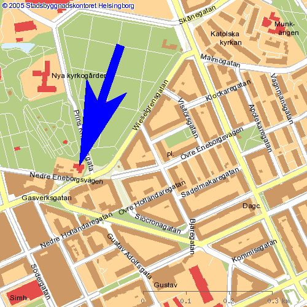

Црква и парохија
Црква у Хелсингборгу је купљена 1996 године од финских методиста, преуређена и већим делом осликана. Посвећена је једном од тројице великих Јерарха Св. Василију Великом. Парохија у Хелсингборгу је самостална има свој храм у властништву 1/1, и у склопу цркве је и парохијски дом. Црква се налази у близини болнице у самом центру града. Нашој парохији поред Хелсингборга, припадају још и градови: Енгехолм, Хегaнес, Ландскруна и сва мања места која припадају овим општинама. Парохије у окружењу које се граниче са нашом су: Халмстад, Јенчепинг, Улофстром, Малме и парохија у краљевини Данској.
Број Срба који живе на територији наше парохије је око 3000, а као активни чланови до сада је уписано око 450 фамилија које примају свештеника за освећење водице. Број активних чланова и оних који редовно долазе на Богослужења свакодневно се повећава, и то треба да буде показатељ да се верска свест код народа полако али сигурно буди.

Парохијал за сад редовно плаћа око 300 породица, па користимо ову прилику да позовемо све оне који до сада нису извршили своју обавезу да то ураде како бисмо могли да функционишемо без потешкоћа. Уплате можете вршити преко PG Плус Гиро рачуна на број: 20 25 29 - 4, SWISH: 123 551 5663.
Црква је отворена суботом од 12.00-18.00, недељом и празницима -црвеним словима по старом (јулијанском) календару од 08.00-14.00 часова, а радним данима од 12.00-17.00 часова. Ако на радни дан падне празник тј. црвено слово, онда је црква отворена од 08.00-14.00 часова као недељом.
Св. Литургија почиње недељом и празником у 09.00, а вечерња Богослужења суботом и у уочи празника у 17.00. Још једном позивамо све парохијане који се нису пријавили, а желели би да им свештеник свети водицу за Васкрс и славу да се јаве проти Драгану, како би он могао на време да организује посете вашим домовима.